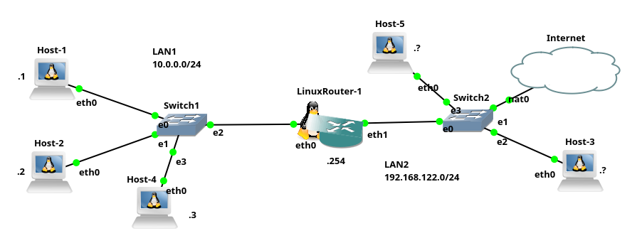

Configuração de básica de rede no Linux
Como explicado no texto introdução de configuração básica de rede, sistemas Linux, permitem configurações de rede: manual; automática; temporária ou persistente. Assim, a seguir serão apresentadas as principais formas (comandos, parâmetros, opções e arquivos), para realizar a configuração básica de rede em ambientes Linux.
Configuração básica de rede são: IP do host, máscara de rede, rota padrão, e IP do servidor DNS.
Atenção!!! normalmente a tarefa de configuração de rede requer privilégios de administrador, ou seja você deve ser root para realizar a configuração. Atualmente isso pode ser feito também com o auxilio do comando sudo.
Configuração temporária
A configuração temporária é mais utilizada para corrigir erros rapidamente ou para testes, os comandos mais comuns para este fim, no Linux são: ifconfig, route e ip, tais comandos são apresentados a seguir:
Configurando IP/Máscara com o comando ifconfig
Tradicionalmente sistemas Like-UNIX utilizam o comando ifconfig, para configurar o endereço IP e máscara de rede de uma dada placa de rede. Os parâmetros e opções mais comuns do comando ifconfig são:
ifconfig- apresenta a configuração de todas as placas de rede ativas do host.ifconfig -a- apresenta a configuração de todas as placas de rede do host, inclusive as que não estiverem ativas.ifconfig eth0- apresenta a configuração apenas da placa de rede, neste caso foi utilizada como exemplo aeth0, mas pode ser outra placa. A descoberta do nome das placas de rede pode ser feita utilizando o comandoifconfig, sem nenhuma opção ou com-a.ifconfig eth0 172.16.1.1 netmask 255.255.255.0- atribui um IP e máscara de rede à placa de rede. No exemplo é atribuído o IP 172.16.1.1 com máscara classe C à placaeth0. Atenção, se a máscara a ser utilizada tiver a mesma classe do IP, não é necessário incluirnetmaske a máscara, ou seja, oifconfigfará isso automaticamente para você.ifconfig eth0 172.16.1.1/24- mesmo que o anterior, mas utilizando notação CIDR. Alguns sistemas não suportam essa forma.ifconfig eth0 down- desliga a placa de rede. Isso pode ser necessário durante alguma tarefa administrativa.ifconfig eth0 up- liga a placa de rede.
Há outras opções e parâmetros possíveis para o ifconfig, mas o básico que queremos por enquanto é isso!
O comando
ifconfigfoi descontinuado no Linux, todavia é muito comum ainda encontrar ele por ai e principalmente sistemas como os BSDs ainda utilizam oifconfig, por isso é muito importante saber como utilizá-lo - para mais informações clique aqui.
Configurando rotas com o comando route
Depois de configurar o endereço IP é comum adicionar uma rota padrão, para que o host consiga acessar outras redes (Internet) e isso pode ser feito com o comando route. Para configuração básica de rotas, as opções e parâmetros mais utilizados para o comando route são:
route- apresenta as rotas presente no host.route -n- mesmo que o anterior, mas apresenta números e não nomes, ou seja, não tenta converter IPs de hosts em nomes, nem dá nome as portas ativas no host. Isso normalmente apresenta o resultado/saída do comando de forma mais rápida, já que não é necessário esperar pela conversão de números em nomes.route add default gw 172.16.1.254- adiciona uma rota padrão, neste exemplo o IP do roteador padrão é o 172.16.1.254.route del default- apaga a rota padrão. Caso mais de uma rota padrão esteja presente, é possível complementar o comando informando qual rota será deletada, tal como:route del default gw 172.16.1.254.
O comando route, também permite adicionar rotas para rede (--net) e hosts (--host), mas não abordaremos isso aqui - para mais informações clique aqui.
O comando
routefoi descontinuado no Linux. Todavia, é muito comum encontrá-lo por ai e assim como oifconfig, os BSDs ainda utilizam oroute.
Configurando IP/Máscara/rotas com o comando ip
Como mencionado anteriormente os comandos ifconfig e route foram descontinuados no Linux. Atualmente o comando padrão para configuração de IP, máscara de rede e rotas no Linux é o comando ip. Então, o ip substitui os comandos ifconfig e route, entretanto o ip não é utilizado para configurar o DNS.
Note que existe o comando
ipe o protocolo IP, eles tem relação, mas não são a mesma coisa!
Os principais exemplos de uso de opções e parâmetros utilizados com o comando ip, são:
ip addressouip address show- apresenta a configuração de todas as placas de rede do host.ip routeouip route show- apresenta as rotas presente no host. Neste também é possível utilizar a opção-N, para mostrar número ao invés de nomes, tal como:ip -N route.ip address add 172.16.1.1/24 dev eth0- atribui um IP e máscara de rede à placa de rede. No exemplo é atribuído o IP 172.16.1.1 com máscara classe C à placaeth0.ip address show dev eth0- apresenta a configuração apenas da placa de rede, neste caso foi utilizada como exemplo aeth0, mas pode ser outra placa.ip address del 172.16.1.1/24 dev eth0- Apaga um IP que foi atribuído a uma dada placa de rede. No exemplo foi deletado o IP 172.16.1.1/24, que havia sido atribuído à placa de redeeth0. Atenção, o comandoipnão substitui os IPs atribuídos previamente à uma placa de rede (que era o comportamento doifconfig). Então, se você atribuir um IP e depois o outro, vão ficar os dois IPs atribuídos naquela placa de rede, por isso é importante a opçãodel, assim é possível remover um IP indesejado/incorreto. Exemplo:ip a a 172.16.1.1/24 dev eth0; ip a a 192.168.1.2/24 dev eth0; ip a a 172.16.1.2/24 dev eth0;, o host onde foram executados esses comando, terá três IPs: 172.16.1.1, 172.16.1.2 e 192.168.1.2. Utilizar vários IPs em uma placa de rede não é tão comum.ip route add default via 172.16.1.254- adiciona uma rota padrão, neste exemplo o IP do roteador padrão é o 172.16.1.254.ip route del default- apaga a rota padrão.ip link show- apresenta o status das placas de rede.ip link set dev eth0 down- desliga a placa de rede. Isso pode ser necessário durante alguma tarefa administrativa.ip link set dev eth0 up- liga a placa de rede.
É possível abreviar as opções do comando
ip, tal comoip a, para ver o status da parte de endereçamento. Entretanto, se você pretende fazer alguma prova ou certificação Linux, é aconselhável utilizar/treinar as opções sem abreviação, já em que provas e certificações são exigidos os comandos completos!
Há outras opções do comando ip, mas a configuração básica de hosts na rede normalmente requer apenas o que foi apresentado anteriormente - para mais informações clique aqui.
Configurando DNS com o arquivo /etc/resolv.conf
Para que hosts consigam acessar redes/Internet utilizando nomes, é necessário informar ao host qual é o IP do servidor DNS, que ele deve utilizar para converter nomes em IPs. Assim, para realizar essa tarefa em hosts Like-UNIX, basta criar/editar o arquivo /etc/resolv.conf e incluir nele a opção nameserver seguida do IP do servidor DNS. Isso pode ser feito da seguinte forma:
echo nameserver 8.8.8.8 > /etc/resolv.conf- informa que o servidor de nomes é o Google (8.8.8.8). Neste exemplo foi utilizado o 8.8.8.8, mas você pode utilizar outros servidores/IPs. Atenção, tal comando sobrescreve (>) o conteúdo do arquivo/etc/resolv.conf.echo nameserver 172.16.1.254 >> /etc/resolv.conf- mesmo que o anterior, mas não sobrescreve o arquivo, mas sim adiciona o conteúdo no final do arquivo (>>).cat /etc/resolv.conf- apresenta o conteúdo do arquivo/etc/resolv.conf, isso é útil para verificar qual é a configuração atual, presente no arquivo.
Atenção: na verdade a configuração do endereço IP do servidor DNS é uma configuração persistente, mas normalmente precisamos dela em qualquer tipo de configuração (não há outra opção de configurar o IP do servidor DNS - pelo menos que o autor conheça).
Normalmente no Linux é possível configurar até 2 servidores DNS, o primeiro nameserver que aparecer no arquivo, é chamado de primário e o seguinte é o secundário. Inicialmente, o sistema tentará resolver o nome utilizando o servidor primário, se esse falhar será utilizado o servidor secundário. Alguns Linux permitem configurar mais que dois servidores DNS para a resolução de nomes. No exemplo a seguir o arquivo de configuração /etc/resolv.conf, tem como servidor primário o 8.8.4.4 e o secundário é o 1.1.1.1, ou seja, é a ordem que aparece o nameserver:
$ cat /etc/resolv.conf
nameserver 8.8.4.4
nameserver 1.1.1.1
Aqui, foi apresentado o comando echo para inserir conteúdos no arquivo /etc/resolv.conf e cat para ver o conteúdo. Entretanto, também é possível criar/editar esse arquivo utilizando editores de texto, tais como o vi ou nano.
Há outras configurações/opções possíveis para o arquivo /etc/resolv.conf, mas não vamos abordá-las aqui - para mais informações clique aqui.
Atenção, todos os sistemas operacionais like-UNIX utilizam o mesmo arquivo/método para configurar o servidor DNS no cliente, isso é padrão!
Configurando a rede automaticamente via DHCP utilizando o comando dhcpcd
Atualmente, quase todos hosts têm sua configuração de rede feita via DHCP. Isso é possível, pois a maioria das redes possuem equipamentos como roteadores e APs, que por sua vez são normalmente equipados com servidores DHCP. Assim, o servidor DHCP fornece para os clientes da rede, configurações como: IP do host, máscara de rede, rota padrão e DNS.
Utilizar configuração via DHCP é muito prático, fácil e evita erros de configuração (ex. IPs duplicados). Isso facilita muito o trabalho do administrador de rede e também permite que redes sem administradores funcionem sem grandes problemas, mesmo que o cliente/usuário da rede não tenha conhecimentos a respeito de redes de computadores.
Atualmente o comando mais utilizado para se obter configurações de rede no cliente, via DHCP deve ser o dhclient. Todavia aqui iremos apresentar o dhcpcd, que também é outro comando muito utilizado em Linux e BSDs.
Não há grandes diferenças entre esses comandos, então se você aprender trabalhar com um desses não terá problemas em utilizar o outro!
Para utilizar o dhcpcd precisamos saber basicamente o seguinte:
dhcpcd- pede configurações de rede para um servidor DHCP.dhcpcd eth0- o mesmo que o anterior, mas especifica a placa de rede que vai receber tal configuração de rede via DHCP. No exemplo foi utilizada a placa de redeeth0.dhcpcd -k eth0- pede para desligar/remover as configurações feitas via DHCP da placa de redeeth0.
Há outras opções para o
dhcpcd, mas vamos parar por aqui - para mais informa clique aqui.
Após executar o comando dhcpcd o host cliente envia um pacote DHCP para a rede, o servidor recebe esse pacote e responde com a configuração da rede para este cliente. O cliente recebe a configuração enviada pelo servidor e aplica as configurações. Após isso, o host cliente deve conseguir acessar a rede. É possível verificar essa configuração posteriormente com os comandos ifconfig, route, ip e cat /etc/resolv.conf.
Os comando de cliente DHCP (dhclient, dhcpcd, etc), normalmente continuam em execução após serem executados. Isso é necessário, pois o servidor DHCP pode exigir que o cliente renove o empréstimo do IP de tempos em tempos.
Configuração básica da rede via arquivos
Todos os comandos apresentados anteriormente são voláteis, ou seja, se você desligar o host, todas as configurações de rede realizadas serão perdidas. Comandos voláteis são bem úteis para testes, todavia se você pretende persistir tal configuração, você terá que fazer isso via arquivo.
Atenção!!! É claro que a configuração de rede para usuários finais, pode ser feita via interface gráfica, que por sua vez consolida as configurações em arquivos - configurar assim é muito fácil e amigável. Todavia, a maioria dos servidores e alguns dispositivos embarcados/IoT, não possuem interface gráfica. Assim, é necessário configurar o arquivo de configuração de rede na mão - é isso que estamos abordando aqui.
Atualmente, um problema da configuração da rede Linux via arquivo, é que cada distribuição/versão pode fazer isso de uma forma diferente, gerando uma falta de padronização e consequentemente uma certa confusão (ver Referências). Moral da história, é que para configurar um Linux via arquivo atualmente você deve buscar na Internet algo como: “configuração rede arquivo”, seguido no nome da sua distribuição/versão. Tal como: “configuração rede arquivo debian 10” e dentre os resultados deve aparecer algo como: https://wiki.debian.org/pt_BR/NetworkConfiguration, ai é só seguir os passos citados.
Dada a falta padronização para configuração de arquivos entre as distribuições/versões Linux, vamos ver um exemplo de arquivo genérico (semelhante ao utilizado no Debian/Ubuntu - principalmente essa é a configuração dos Dockers do GNS3 que utilizo nas aulas :-p). Veja o conteúdo do arquivo a seguir:
#
# This is a sample network config, please uncomment lines to configure the network
#
# Uncomment this line to load custom interface files
# source /etc/network/interfaces.d/*
# Static config for eth0
#auto eth0
#iface eth0 inet static
# address 192.168.0.2
# netmask 255.255.255.0
# gateway 192.168.0.1
# up echo nameserver 192.168.0.1 > /etc/resolv.conf
# DHCP config for eth0
#auto eth0
#iface eth0 inet dhcp
# hostname Host-4
Dado o conteúdo do arquivo de configuração de rede anterior e já tendo um conhecimento mínimo de rede e Linux, observa-se o seguinte:
- Tudo que iniciar com
#é comentário e desta forma é desconsiderado (não é executado). Normalmente este tipo de arquivo vem com textos descrevendo o que fazer, bem como, com exemplos de opções e parâmetros comentados. - A configuração estática de rede inicia abaixo do comentário:
# Static config for eth0, sendo as principais opções:address- endereço IP a ser atribuído ao host;netmask- máscara de rede;gateway- endereço IP do gateway padrão à ser utilizado;nameserver- IP do servidor de nomes (DNS) a ser utilizado - na verdade aqui está sendo executado um comando completo para se atribuir endereço do servidor DNS;
- A configuração dinâmica de rede inicia após o comentário:
# DHCP config for eth0. Nesta configuração a única opção apresentada éhostname, que pode ser utilizada para configurar o nome do host, entretanto essa não é obrigatória.
Configuração manual via arquivo
No conteúdo apresentado anteriormente, tudo está comentado, logo não há configuração de rede válida. Então, supondo que se deseja realizar uma configuração de rede estática e persistente, tal arquivo poderia ficar assim:
#
# This is a sample network config, please uncomment lines to configure the network
#
# Uncomment this line to load custom interface files
# source /etc/network/interfaces.d/*
# Static config for eth0
auto eth0
iface eth0 inet static
address 192.168.0.2
netmask 255.255.255.0
gateway 192.168.0.1
up echo nameserver 192.168.0.1 > /etc/resolv.conf
# DHCP config for eth0
#auto eth0
#iface eth0 inet dhcp
# hostname Host-4
Comparando o conteúdo inicial com o apresentado anteriormente, observa-se que foram descomentadas as linhas com as opções de configuração de rede estática. É válido mencionar que a configuração de gateway e DNS são opcionais.
Configuração automática via arquivo
Outro exemplo seria configurar uma nova placa utilizando DHCP, essa nova placa seria a eth1, veja como ficaria o conteúdo com essa alteração:
#
# This is a sample network config, please uncomment lines to configure the network
#
# Uncomment this line to load custom interface files
# source /etc/network/interfaces.d/*
# Static config for eth0
auto eth0
iface eth0 inet static
address 192.168.0.2
netmask 255.255.255.0
# gateway 192.168.0.1
# up echo nameserver 192.168.0.1 > /etc/resolv.conf
# DHCP config for eth0
auto eth1
iface eth1 inet dhcp
hostname Host-4
Note, no conteúdo anterior, que a parte de IP estático foi mantida, e a parte de DHCP foi descomentada e mais, a interface foi trocada de eth0 para eth1. Atenção: não é recomendável utiliza configuração estática e dinâmica para a mesma placa de rede do host - utilize apenas uma para cada interface. Assim, neste exemplo, a placa eth0 vai receber IP estático e a eth1 vai receber configuração via DHCP. No exemplo, esperá-se que o DHCP forneça o IP do gateway e do DNS, então a opção de gateway e DNS foi comentada na configuração da eth0. Se uma nova placa de rede for adicionada ao host, basta adicionar a configuração para essa nova placa no arquivo.
A principio a configuração básica de rede de clientes Linux (ou qualquer outro sistema operacional) não suporta balanceamento de carga entre vários gateways. Então, não adianta ter mais que uma rota padrão, o sistema operacional sempre vai mandar os pacotes pela primeira rota padrão que ele analisar, as outras não serão utilizadas. :-\
Sempre que alguma configuração for alterada no arquivo, é necessário reiniciar o computador ou melhor, reinicia apenas o serviço de rede. Novamente isso varia entre as distribuições/versões Linux. Então é necessário pesquisar como realizar isso na distribuição que você estiver utilizando.
Lembrando que o foco aqui não foi ensinar como configurar o arquivo de rede de um dado Linux, mas sim apenas dar uma ideia de como isso é feito, mesmo assim, no final deste texto há alguns links de como configurar os Linux mais famosos. Agora, você pode portar essa ideia para a distribuição que você estiver utilizando, ou seja, o que você tem que saber para conseguir configurar, independente da distribuição é achar:
- Como é que eu configuro o IP, máscara, gateway e DNS no arquivo?
- Como alterar entre as placas de rede?
- Cada placa tem um arquivo próprio ou é tudo junto?
- Como reiniciar o serviço de rede para que as configurações possam valer?
São essas perguntas que você tem que responder, não só no Linux, mas em qualquer outro sistema operacional. ;-)
Para finalizar, parece que a ferramenta NetworManager está se tornando um padrão entre os Linux. Esse permite realizar a configuração de rede persistente via texto ou ambiente gráfico, ele também facilita muito a configuração de enlaces sem fio (não vamos abordar a configuração de enlaces sem fio aqui, mas isso é importante - o autor recomenda realizá-la via NetworkManager, caso contrário as opções são iwconfig, wpa_supplicant, etc.).
Exemplo prático de configuração básica de rede em ambiente Linux
Para uma melhor consolidação dos conceitos apresentados anteriormente, a seguir são apresentados exemplos práticos do uso dos comandos necessários para a configuração básica de redes de computadores. Tal exemplo utiliza o cenário de rede da Figura 1.
|  |
|---|
| Figura 1 - Cenário de rede |
Neste cenário de exemplo as configurações utilizadas são:
- Host-1 ifconfig e route
- Host-2 ip
- Host-3 dhcpcd
- Host-4 arquivo estático
- Host-5 arquivo DHCP
- LinuxRouter-1 ip, ifconfig, NAT
Referências
Referências para exemplos de configurações de rede para algumas distribuições Linux:
- Debian: https://wiki.debian.org/NetworkConfiguration
- Ubuntu: https://ubuntu.com/server/docs/network-configuration
- Arch: https://wiki.archlinux.org/title/Network_configuration
- Fedora: https://docs.fedoraproject.org/en-US/fedora-coreos/sysconfig-network-configuration/
- Gentoo: https://wiki.gentoo.org/wiki/Handbook:AMD64/Installation/Networking
- Slackware: http://www.slackware.com/config/network.php